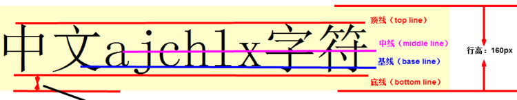
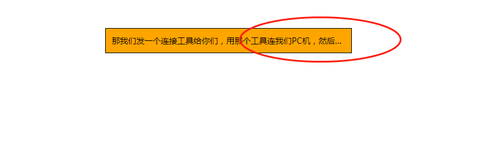

前言
这篇文章，主要介绍一下CSS的特性、选择器的权重问题、CSS的背景属性（background)、CSS中Web字体的使用以及文字换行，和显示省略号的样式。接下来我们开始。
CSS的特性-继承性、层叠性、优先级三个特性
继承性-这个特性主要对文本样式有效
所谓继承性是指书写CSS样式表时，子标签会继承父标签的某些样式，如文本颜色和字号。想要设置一个可继承的属性，只需将它应用于父元素即可。
集成的特性主要有一下：
内联元素可继承：letter-spacing、word-spacing、white-space、line-height、color、font、font-family、font-size、font-style、font-variant、font-weight、text-decoration、text-transform、direction。
终端块状元素可继承：text-indent和text-align。
列表元素可继承：list-style、list-style-type、list-style-position、list-style-image。
注意：
恰当地使用继承可以简化代码，降低CSS样式的复杂性。子元素可以继承父元素的样式（text-，font-，line-这些元素开头的都可以继承，以及color属性）
层叠性-所谓层叠性是指多种CSS样式的叠加
是浏览器处理冲突的一个能力,如果一个属性通过两个相同选择器设置到同一个元素上，那么这个时候一个属性就会将另一个属性层叠掉
比如先给某个标签指定了内部文字颜色为红色，接着又指定了颜色为蓝色，此时出现一个标签指定了相同样式不同值的情况，这就是样式冲突。 就近原则
一般情况下，如果出现样式冲突，则会按照CSS书写的顺序，以最后的样式为准。
- 样式冲突，遵循的原则是就近原则。 那个样式离着结构近，就执行那个样式。
- 样式不冲突，不会层叠
优先级特性-定义CSS样式时，经常出现两个或更多规则应用在同一元素上，这时就会出现优先级的问题。
关于优先级特性，其实就是样式生效的权重问题，这对这个问题，有一个权重的计算规则表
| 继承或者* 的贡献值 | 0,0,0,0 |
|---|---|
| 每个元素（标签）贡献值为 | 0,0,0,1 |
| 每个类，伪类贡献值为 | 0,0,1,0 |
| 每个ID贡献值为 | 0,1,0,0 |
| 每个行内样式贡献值 | 1,0,0,0 |
| 每个!important贡献值 重要的 | ∞ 无穷大 |
总结优先级：
- 使用了 !important声明的规则。
- 内嵌在 HTML 元素的 style属性里面的声明。
- 使用了 ID 选择器的规则。
- 使用了类选择器、属性选择器、伪元素和伪类选择器的规则。
- 使用了元素选择器的规则。
- 只包含一个通用选择器的规则。
- 同一类选择器则遵循就近原则。
- 他们在计算的时候没有进制的关系的。
总结：权重是优先级的算法，层叠是优先级的表现
背景的设置-background
CSS 可以添加背景颜色和背景图片，以及来进行图片设置。
| background-color | 背景颜色 |
|---|---|
| background-image | 背景图片地址 |
| background-repeat | 是否平铺 |
| background-position | 背景位置 |
| background-attachment | 背景固定还是滚动 |
| 背景的合写（复合属性） | background:背景颜色 背景图片地址 背景平铺 背景滚动 背景位置 |
background-color-背景颜色
背景颜色的设置可以有三种方式：
- 直接颜色名的方式表示，例如：
background-color: red; - 利用十六进制的颜色表示法来显示，例如：
background-color: #fff; - 利用RGBA和RGB方式来进行表示，其中RGBA可以设置颜色的透明度，例如：
background-color: rgba(0,0,0,0.5),其中0.5就是颜色的透明度，这个数的取值范围是0 ~ 1，取1的时候就是不透明，取零就是全透明。rgb颜色表示法，只有rgba的前三个参数，例如：background-color: rgb(0,0,0,);。
background-image 背景图片
语法：
1 | background-image : none | url (url); |
参数：
none : 无背景图（默认的）
url : 使用绝对或相对地址指定背景图像
background-image 属性允许指定一个图片展示在背景中（只有CSS3才可以多背景）可以和 background-color 连用。 如果图片不重复地话，图片覆盖不到地地方都会被背景色填充。 如果有背景图片平铺，则会覆盖背景颜色。
background-repeat 背景平铺
语法：
1 | background-repeat : repeat | no-repeat | repeat-x | repeat-y |
参数：
repeat : 背景图像在纵向和横向上平铺（默认的）
no-repeat : 背景图像不平铺
repeat-x : 背景图像在横向上平铺
repeat-y : 背景图像在纵向平铺
设置背景图片时，默认把图片在水平和垂直方向平铺以铺满整个元素。
repeat-x : 背景图像在横向上平铺
repeat-y : 背景图像在纵向平铺
beckground-position 背景图片的位置
语法：
1 | background-position: 百分比 || 百分比; |
参数：
position : top | center | bottom | left | center | right
说明：
设置或检索对象的背景图像位置。必须先指定background-image属性。默认值为：(0% 0%)。
如果只指定了一个值，该值将用于横坐标。纵坐标将默认为50%。第二个值将用于纵坐标，意思就是，如果只写一个值则另一个值默认是居中。
注意：
- position 后面是x坐标和y坐标。 可以使用方位名词或者 精确单位。
- 如果和精确单位和方位名字混合使用，则必须是x坐标在前，y坐标后面。比如 background-position: 15px top; 则 15px 一定是 x坐标 top是 y坐标
background-attachment 背景附着
语法：
1 | background-attachment : scroll | fixed |
参数：
scroll : 背景图像是随对象内容滚动
fixed : 背景图像固定
说明：
设置或检索背景图像是随对象内容滚动还是固定的。
利用背景这个属性制作导航栏的自动伸缩门的效果
这个效果可以，看一下微信的官网页面，其中导航栏就是利用了这个技巧。
导航栏中盒子的宽度不一样，但是他们左右两边的圆角是一样的，这个特效就是利用了CSS的背景图片定位的效果。
1 |
|
代码中用到的图片：

Web字体
字体格式
不同浏览器所支持的字体格式是不一样的，我们有必要了解一下有关字体格式的知识。
1、TureType(.ttf)格式
.ttf字体是Windows和Mac的最常见的字体，是一种RAW格式，支持这种字体的浏览器有IE9+、Firefox3.5+、Chrome4+、Safari3+、Opera10+、iOS Mobile、Safari4.2+；
2、OpenType(.otf)格式
.otf字体被认为是一种原始的字体格式，其内置在TureType的基础上，支持这种字体的浏览器有Firefox3.5+、Chrome4.0+、Safari3.1+、Opera10.0+、iOS Mobile、Safari4.2+；
3、Web Open Font Format(.woff)格式
woff字体是Web字体中最佳格式，他是一个开放的TrueType/OpenType的压缩版本，同时也支持元数据包的分离，支持这种字体的浏览器有IE9+、Firefox3.5+、Chrome6+、Safari3.6+、Opera11.1+；
4、Embedded Open Type(.eot)格式
.eot字体是IE专用字体，可以从TrueType创建此格式字体，支持这种字体的浏览器有IE4+；
5、SVG(.svg)格式
.svg字体是基于SVG字体渲染的一种格式，支持这种字体的浏览器有Chrome4+、Safari3.1+、Opera10.0+、iOS Mobile Safari3.2+；
了解了上面的知识后，我们就需要为不同的浏览器准备不同格式的字体，通常我们会通过字体生成工具帮我们生成各种格式的字体，因此无需过于在意字体格式间的区别差异。
字体图标
图片是有诸多优点的，但是缺点很明显，比如图片不但增加了总文件的大小，还增加了很多额外的”http请求”，这都会大大降低网页的性能的。更重要的是图片不能很好的进行“缩放”，因为图片放大和缩小会失真。 我们后面会学习移动端响应式，很多情况下希望我们的图标是可以缩放的。此时，一个非常重要的技术出现了，额不是出现了，是以前就有，是被从新”宠幸”啦。。 这就是字体图标（iconfont).
字体图标优点
可以做出跟图片一样可以做的事情,改变透明度、旋转度，等..
但是本质其实是文字，可以很随意的改变颜色、产生阴影、透明效果等等…
本身体积更小，但携带的信息并没有削减。
几乎支持所有的浏览器
移动端设备必备良药…
字体图标的使用，我一般使用icomoon字库
具体的使用：
进入 https://icomoon.io/ 下载需要的字体文件到本地计算机上
解压文件，将fonts文件夹放到项目目录下
开始使用字体图标，首先我们要将下载好的字体引入到HTML文件中
引入字体，利用css字体声明：1
2
3
4
5
6
7
8
9
10@font-face {
font-family: 'icomoont';
src: url('fonts/icomoon.eot?s1xyct');
src: url('fonts/icomoon.eot?s1xyct#iefix') format('embedded-opentype'),
url('fonts/icomoon.ttf?s1xyct') format('truetype'),
url('fonts/icomoon.woff?s1xyct') format('woff'),
url('fonts/icomoon.svg?s1xyct#icomoon') format('svg');
font-weight: normal;
font-style: normal;
}这段声明字体的样式，我们可以在我们刚刚下载解压的icomoon文件夹下的style.css 文件中的第一段中找到，可以直接拷贝下来。
现在可以开始使用字体了，是有这个字体时要注意,一定要将字体设置为刚刚声明的字体，也就是我们一定要在样式中写入这样的代码：
font-family: 'icomoon';
例如：1
2
3span {
font-family: 'icommon';
}第二步，找到相应的字有两种方式使用，一种是利用伪类的方式，另一种是直接使用的方式。
我们要在icomoon这个文件夹下，找到一个dom.html的文件打开。可以利用伪类，在伪类的content中写入这个图标的编码，如图片的左下角的代码
1
2
3
4/* 这个就是一个小房子的图标，图片红框标记的地方 */
span:before {
content: '\e900';
}还可以直接拷贝，拷贝的是右下角的蓝色的方框，如图标记的地方
1
2<!-- 这就是直接拷贝右下角的信息，看着像是没有信息，其实是有信息的 -->
<span><span>
visibility 可见性
1 | visibility: visible || hidden; |
overflow 超出内容管理
给父级盒子容器，添加 overflow: hidden; 可以清楚浮动和margin-top塌陷问题。
cursor 鼠标显示的样式
| 值 | 描述 |
|---|---|
| default | 默认光标（通常是一个箭头） |
| auto | 默认。浏览器设置的光标。 |
| crosshair | 光标呈现为十字线。 |
| pointer | 光标呈现为指示链接的指针（一只手） |
| move | 此光标指示某对象可被移动。 |
| e-resize | 此光标指示矩形框的边缘可被向右（东）移动。 |
| ne-resize | 此光标指示矩形框的边缘可被向上及向右移动（北/东）。 |
| nw-resize | 此光标指示矩形框的边缘可被向上及向左移动（北/西）。 |
| n-resize | 此光标指示矩形框的边缘可被向上（北）移动。 |
| se-resize | 此光标指示矩形框的边缘可被向下及向右移动（南/东）。 |
| sw-resize | 此光标指示矩形框的边缘可被向下及向左移动（南/西）。 |
| s-resize | 此光标指示矩形框的边缘可被向下移动（南）。 |
| w-resize | 此光标指示矩形框的边缘可被向左移动（西）。 |
| text | 此光标指示文本。 |
| wait | 此光标指示程序正忙（通常是一只表或沙漏）。 |
| help | 此光标指示可用的帮助（通常是一个问号或一个气球）。 |
vertical-align 垂直居中

语法
1 | vertical-align : baseline |top |middle |bottom； |
vertical-align 不影响块级元素中的内容对齐，它只针对于 行内元素或者行内块元素，特别是行内块元素， 通常用来控制图片/表单与文字的对齐。
最常用的的是解决图片下方空白间隙的问题
在介绍这个问题前，我们先要看一下文字的是如何对其的以及行高是如何测量的，看一张图片我们就可以明白，文本是基于文字的基线对其的，这个就像以前写英语作业的英语作业本一样。

由于图片底线会和父级盒子的基线对齐。这样会造成一个问题，就是图片底侧会有一个空白缝隙。
解决这个问题，有两种方法：
改变对其垂直方向上的对其方式,不让图片基于基线对其就可以：
1
2
3
4/* 给img vertical-align:middle | top | bottom等等。 让图片不要和基线对齐 */
img {
vertical-align: bottom | top |middle;
}改变图片的显示类型，给img 添加 display：block; 转换为块级元素就不会存在问题了:
1
2
3img {
display: block;
}
文本过多超出了容器时，显示省略号的方法
- 不让文字换行
- 隐藏超出的文字
- 设置显示成省略号
这三个部分用到了不同的属性：
不让文字换行显示：
1 | white-space: normal | nowrap ; |
文字超出时要隐藏起来
1 | overflow: hidden; |
文字显示换成省略号：
1 | text-overflow: ellipsis; |
注意：这三个属性一样要同时设置。

在样式中加入了:hover 当鼠标放在这个盒子上时正常显示
1 |
|
END